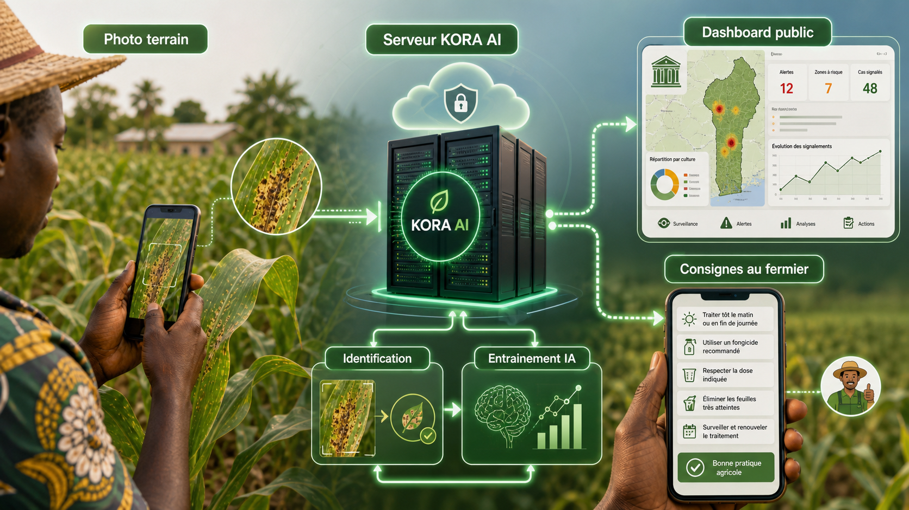
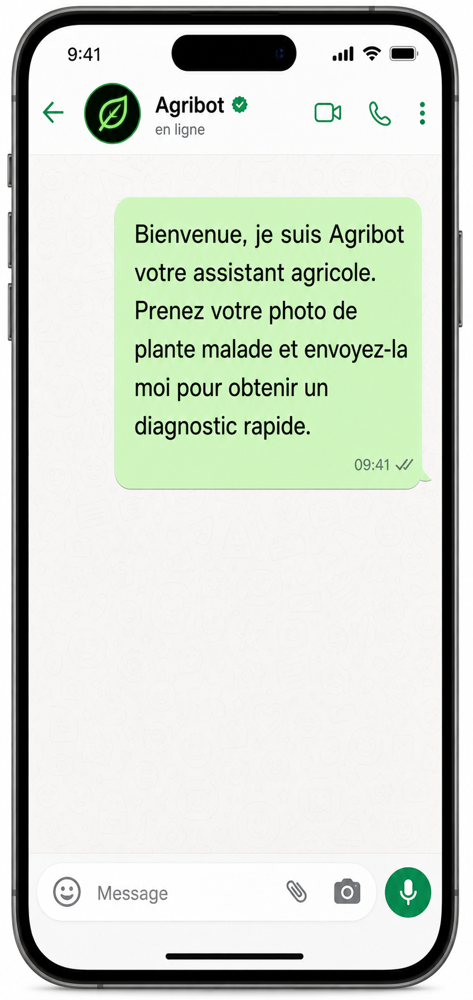
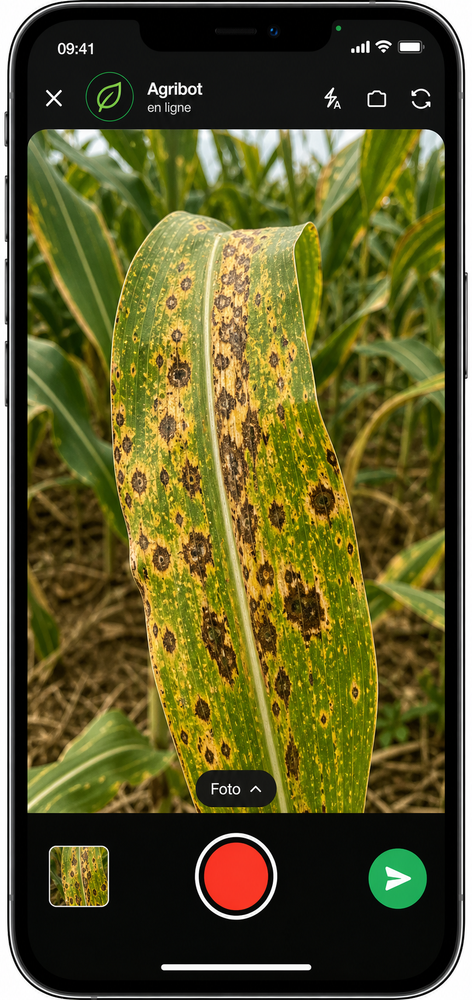
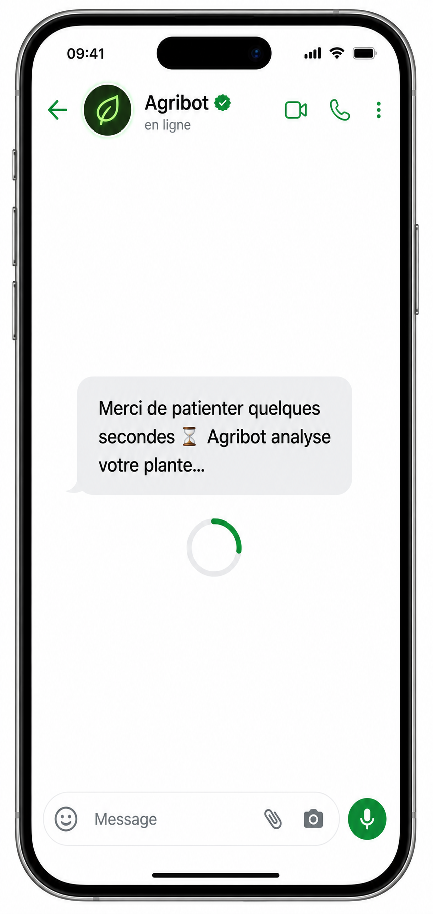
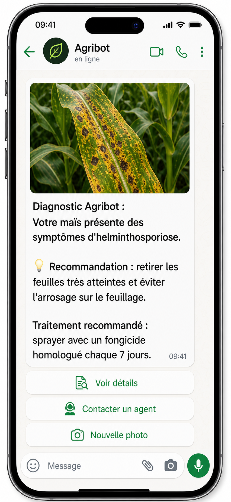
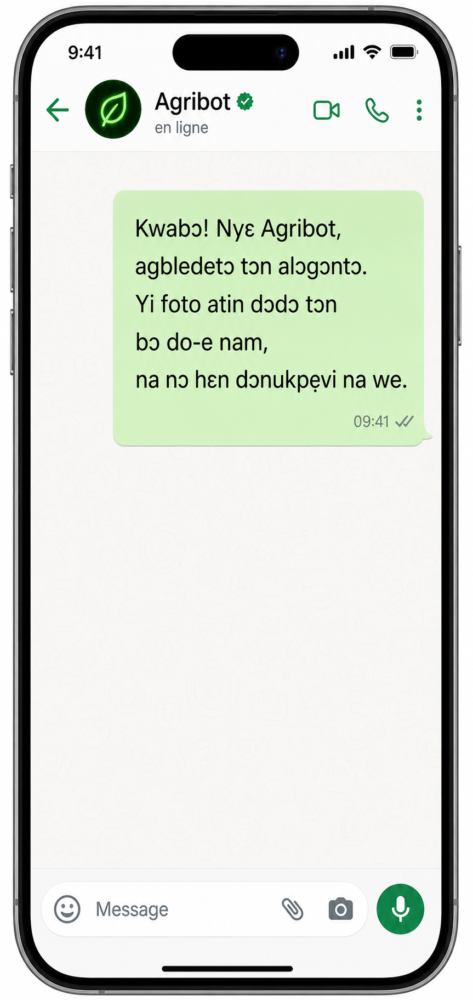
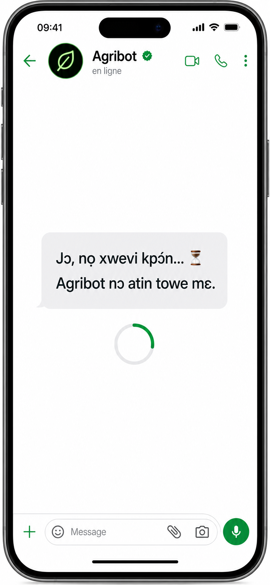
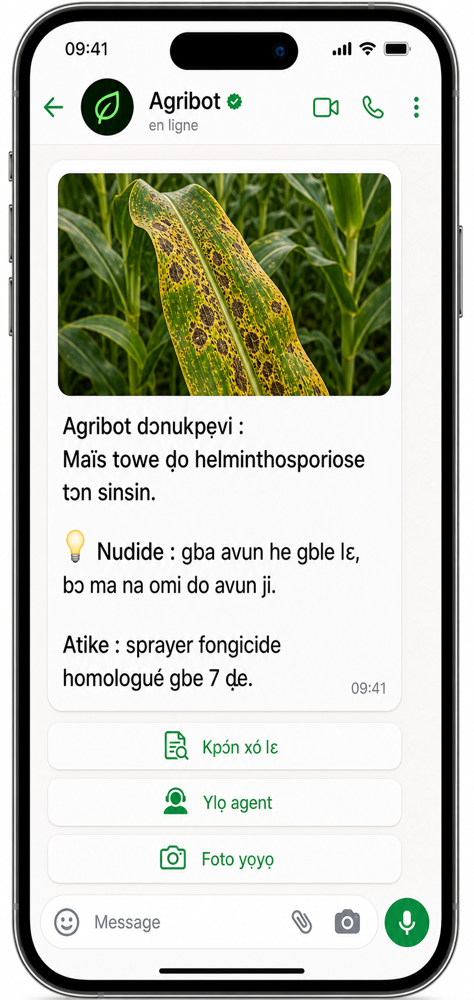

Agribot assiste les producteurs, coopératives et agents terrain dans le diagnostic des maladies des cultures, et fournit à l'État un outil de centralisation des alertes agricoles et de pilotage territorial par la donnée.
01 — Contexte
Le Bénin a adopté en 2023 sa Stratégie Nationale d'Intelligence Artificielle et des Mégadonnées (SNIAM 2023-2027), avec un mandat explicite : déployer des solutions d'IA adaptées aux besoins nationaux dans les secteurs prioritaires. L'agriculture, premier secteur d'activité du pays, constitue un cas d'usage évident. Les producteurs font face à des pertes de rendement, des maladies non détectées à temps et des difficultés d'accès au conseil technique. L'État, de son côté, dispose de peu d'outils pour centraliser les signaux terrain et piloter la santé des cultures à l'échelle territoriale.
02 — Objectif
Agribot n'est pas seulement un outil d'assistance aux producteurs. C'est aussi un instrument de centralisation et d'aide à la décision pour les institutions publiques qui supervisent le secteur agricole.
03 — Solution technique
La solution repose sur des modèles de vision par ordinateur spécialisés dans la détection de maladies végétales.








04 — Réalisation
Six étapes opérationnelles, de la collecte d'images à l'amélioration continue, portées par une équipe pluridisciplinaire entièrement mobilisable au Bénin.
Le pilote mobilise sept chantiers de ressources humaines complémentaires entre la France et le Bénin, un investissement matériel souverain et une enveloppe d'exploitation annuelle. Survolez chaque poste pour voir sa mission ; ouvrez la synthèse pour le détail des coûts.
Postes récurrents au-delà de l'investissement initial : énergie, maintenance, sécurité et exploitation terrain.
05 — Chiffrage indicatif
L'investissement se décompose en deux phases distinctes, permettant de valider la solution à périmètre réduit avant tout engagement à l'échelle nationale.
06 — Pour aller plus loin
Cette page peut être complétée par un pitch oral synthétique et une foire aux questions conçue pour anticiper les objections institutionnelles les plus courantes.
Bonjour, et merci de me recevoir.
Je souhaite vous présenter une proposition de service public numérique agricole qui s'inscrit directement dans la Stratégie Nationale d'Intelligence Artificielle et des Mégadonnées 2023-2027 du Bénin, adoptée en janvier 2023, avec l'ambition de développer des solutions technologiques adaptées aux besoins du pays, notamment dans l'agriculture.
L'idée est simple : permettre à un producteur, à un agent de terrain ou à une coopérative d'envoyer la photo d'une plante ou d'une feuille présentant un symptôme, puis de recevoir rapidement un premier diagnostic probable ainsi qu'une orientation utile. En parallèle, les données remontées par le terrain peuvent être centralisées dans un système de monitoring pour aider l'État à mieux suivre les maladies, ravageurs et alertes agricoles.
Ce projet ne doit pas être compris comme une application isolée de plus. Le Bénin a déjà engagé une dynamique de transformation numérique agricole avec des plateformes comme acteur-agricole.bj, agrizonecna.com, ainsi qu'une plateforme de gestion et de suivi des exploitations agricoles ; la proposition ici est donc de créer une brique complémentaire, spécialisée dans l'assistance phytosanitaire et la remontée de données terrain.
L'intérêt pour l'État est double. Premièrement, il s'agit d'un outil concret d'appui aux producteurs, aux agents techniques, aux ONG et aux projets agricoles, en apportant une réponse simple à un problème fréquent : identifier plus vite un symptôme, orienter l'action, et réduire les pertes liées aux maladies ou aux ravageurs.
Deuxièmement, il s'agit d'un outil de pilotage public : chaque signal remonté peut nourrir une lecture agrégée par territoire, par culture, par période ou par type de problème, afin d'améliorer la surveillance phytosanitaire et l'aide à la décision.
Autrement dit, nous ne parlons pas seulement d'un assistant numérique pour les agriculteurs. Nous parlons d'une infrastructure légère de collecte, d'analyse et de centralisation de données agricoles, au service du terrain mais aussi au service de l'État. C'est précisément ce type de cas d'usage concret que la SNIAM cherche à encourager : des solutions utiles, visibles, adaptées au contexte béninois et capables de produire de la valeur publique.
Sur le plan technique, l'approche est volontairement simple et robuste. L'application mobile permet de prendre une photo, cette photo est envoyée à un serveur via une API, puis des modèles spécialisés de vision par ordinateur analysent l'image pour identifier une maladie, un ravageur ou un état probable de la culture, avant de renvoyer le diagnostic. Les données peuvent ensuite être stockées de façon structurée pour alimenter un tableau de bord de monitoring, et le système s'améliore progressivement grâce aux données locales validées sur le terrain.
Ce point est important : il ne s'agit pas ici d'un projet abstrait ou déconnecté du pays. Le modèle peut être entraîné progressivement à partir de données réelles béninoises, avec l'appui d'experts agricoles, d'agents terrain, d'universités, de techniciens et de compétences locales en développement et en data. Cela permet de construire une solution plus crédible, plus souveraine et mieux adaptée aux réalités des filières et des territoires.
Le projet est également réaliste dans sa mise en œuvre. Nous ne proposons pas un grand programme complexe à déployer immédiatement à l'échelle nationale. Nous proposons un pilote ciblé, par exemple sur une ou deux filières prioritaires et dans un périmètre géographique limité, afin de tester le service, valider son utilité, mesurer l'adoption terrain, affiner les modèles et construire progressivement les conditions d'un passage à l'échelle. Cette logique de déploiement progressif est à la fois plus prudente, plus efficace et plus compatible avec la conduite d'une politique publique.
Ce projet présente aussi un intérêt stratégique en matière d'investissement public. Il peut être structuré sous forme de pilote initial, puis d'exploitation institutionnelle avec un cadre contractuel clair, une maintenance continue, des améliorations progressives et une visibilité budgétaire pour l'État. L'enjeu n'est pas uniquement technologique ; il s'agit de mettre en place un outil mutualisable, durable, capable de renforcer à la fois les services aux producteurs et les capacités de pilotage du secteur agricole.
Ma conviction est donc la suivante : le Bénin a déjà posé une ambition forte avec la SNIAM, il a déjà commencé à structurer un écosystème agricole numérique, et il lui faut désormais des cas d'usage stratégiques capables de relier innovation, utilité terrain et décision publique. Agribot peut être l'un de ces cas d'usage.
En résumé, cette proposition vise à créer un service numérique agricole qui assiste les acteurs de terrain, centralise des données utiles au suivi phytosanitaire, s'appuie sur des ressources locales pour l'apprentissage et peut être déployé de manière progressive à travers un pilote. C'est une solution concrète, compatible avec les priorités nationales, et pensée pour produire à la fois de l'impact terrain et de la valeur institutionnelle.
Je serais heureux de pouvoir vous présenter la maquette, le schéma d'architecture, le pilote proposé ainsi que les modalités de partenariat institutionnel pour avancer sur cette initiative.